Example: Bayesian initial condition inversion in an advection-diffusion problem
In this example we tackle the problem of quantifying the uncertainty in the solution of an inverse problem governed by a parabolic PDE via the Bayesian inference framework. The underlying PDE is a time-dependent advection-diffusion equation in which we seek to infer an unknown initial condition from spatio-temporal point measurements.
The Bayesian inverse problem:
Following the Bayesian framework, we utilize a Gaussian prior measure , with where is an elliptic differential operator as described in the PoissonBayesian example, and use an additive Gaussian noise model. Therefore, the solution of the Bayesian inverse problem is the posterior measure, with and .
- The posterior mean is characterized as the minimizer of
which can also be interpreted as the regularized functional to be minimized in deterministic inversion. The observation operator extracts the values of the forward solution on a set of locations at times .
- The posterior covariance is the inverse of the Hessian of , i.e.,
The forward problem:
The PDE in the parameter-to-observable map models diffusive transport in a domain ():
Here, is the diffusion coefficient and is the final time. The velocity field is computed by solving the following steady-state Navier-Stokes equation with the side walls driving the flow:
Here, is pressure, is the Reynolds number. The Dirichlet boundary data is given by on the left wall of the domain, on the right wall, and everywhere else.
The adjoint problem:
1. Load modules
import dolfin as dl
import math
import numpy as np
import matplotlib.pyplot as plt
%matplotlib inline
import sys
sys.path.append( "../" )
from hippylib import *
sys.path.append( "../applications/ad_diff/" )
from model_ad_diff import TimeDependentAD
import nb
import logging
logging.getLogger('FFC').setLevel(logging.WARNING)
logging.getLogger('UFL').setLevel(logging.WARNING)
dl.set_log_active(False)
np.random.seed(1)
2. Construct the velocity field
def v_boundary(x,on_boundary):
return on_boundary
def q_boundary(x,on_boundary):
return x[0] < dl.DOLFIN_EPS and x[1] < dl.DOLFIN_EPS
def computeVelocityField(mesh):
Xh = dl.VectorFunctionSpace(mesh,'Lagrange', 2)
Wh = dl.FunctionSpace(mesh, 'Lagrange', 1)
XW = dl.MixedFunctionSpace([Xh, Wh])
Re = 1e2
g = dl.Expression(('0.0','(x[0] < 1e-14) - (x[0] > 1 - 1e-14)'))
bc1 = dl.DirichletBC(XW.sub(0), g, v_boundary)
bc2 = dl.DirichletBC(XW.sub(1), dl.Constant(0), q_boundary, 'pointwise')
bcs = [bc1, bc2]
vq = dl.Function(XW)
(v,q) = dl.split(vq)
(v_test, q_test) = dl.TestFunctions (XW)
def strain(v):
return dl.sym(dl.nabla_grad(v))
F = ( (2./Re)*dl.inner(strain(v),strain(v_test))+ dl.inner (dl.nabla_grad(v)*v, v_test)
- (q * dl.div(v_test)) + ( dl.div(v) * q_test) ) * dl.dx
dl.solve(F == 0, vq, bcs, solver_parameters={"newton_solver":
{"relative_tolerance":1e-4, "maximum_iterations":100}})
plt.figure(figsize=(15,5))
vh = dl.project(v,Xh)
qh = dl.project(q,Wh)
nb.plot(nb.coarsen_v(vh), subplot_loc=121,mytitle="Velocity")
nb.plot(qh, subplot_loc=122,mytitle="Pressure")
plt.show()
return v
3. Set up the mesh and finite element spaces
mesh = dl.refine( dl.Mesh("ad_20.xml") )
wind_velocity = computeVelocityField(mesh)
Vh = dl.FunctionSpace(mesh, "Lagrange", 1)
print "Number of dofs: {0}".format( Vh.dim() )
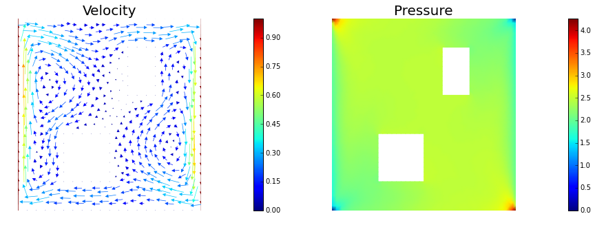
Number of dofs: 2023
4. Set up model (prior, true/proposed initial condition)
#gamma = 1
#delta = 10
#prior = LaplacianPrior(Vh, gamma, delta)
gamma = 1
delta = 8
prior = BiLaplacianPrior(Vh, gamma, delta)
prior.mean = dl.interpolate(dl.Expression('0.5'), Vh).vector()
true_initial_condition = dl.interpolate(dl.Expression('min(0.5,exp(-100*(pow(x[0]-0.35,2) + pow(x[1]-0.7,2))))'), Vh).vector()
problem = TimeDependentAD(mesh, [Vh,Vh,Vh], 0., 4., 1., .2, wind_velocity, True, prior)
objs = [dl.Function(Vh,true_initial_condition),
dl.Function(Vh,prior.mean)]
mytitles = ["True Initial Condition", "Prior mean"]
nb.multi1_plot(objs, mytitles)
plt.show()
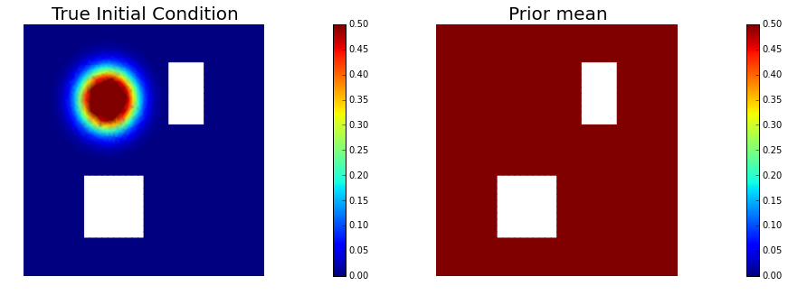
5. Generate the synthetic observations
rel_noise = 0.001
utrue = problem.generate_vector(STATE)
x = [utrue, true_initial_condition, None]
problem.solveFwd(x[STATE], x, 1e-9)
MAX = utrue.norm("linf", "linf")
noise_std_dev = rel_noise * MAX
problem.ud.copy(utrue)
problem.ud.randn_perturb(noise_std_dev)
problem.noise_variance = noise_std_dev*noise_std_dev
nb.show_solution(Vh, true_initial_condition, utrue, "Solution")
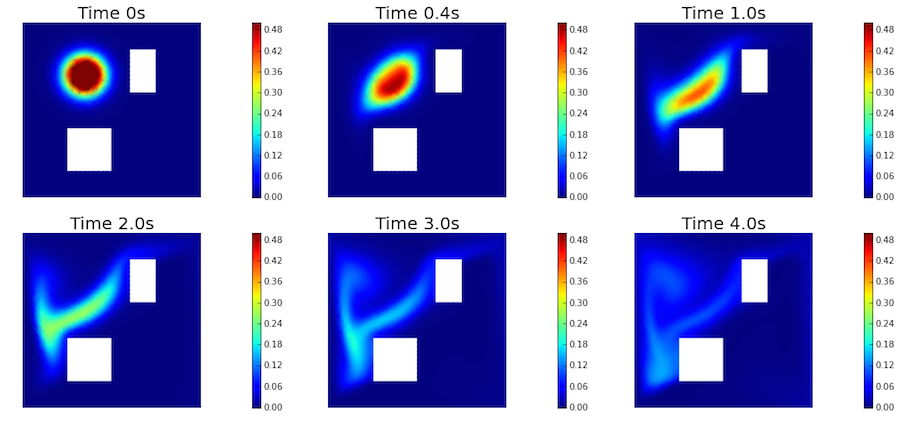
6. Test the gradient and the Hessian of the cost (negative log posterior)
a0 = true_initial_condition.copy()
modelVerify(problem, a0, 1e-12, is_quadratic=True)
(yy, H xx) - (xx, H yy) = -2.66447204172e-14
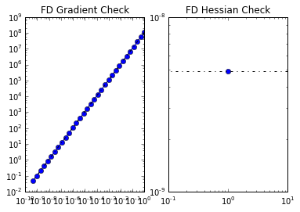
7. Evaluate the gradient
[u,a,p] = problem.generate_vector()
problem.solveFwd(u, [u,a,p], 1e-12)
problem.solveAdj(p, [u,a,p], 1e-12)
mg = problem.generate_vector(PARAMETER)
grad_norm = problem.evalGradientParameter([u,a,p], mg)
print "(g,g) = ", grad_norm
(g,g) = 1.67407425719e+12
8. The Gaussian approximation of the posterior
H = ReducedHessian(problem, 1e-12, gauss_newton_approx=False, misfit_only=True)
k = 80
p = 20
print "Single Pass Algorithm. Requested eigenvectors: {0}; Oversampling {1}.".format(k,p)
Omega = np.random.randn(a.array().shape[0], k+p)
d, U = singlePassG(H, prior.R, prior.Rsolver, Omega, k)
posterior = GaussianLRPosterior( prior, d, U )
plt.plot(range(0,k), d, 'b*', range(0,k+1), np.ones(k+1), '-r')
plt.yscale('log')
plt.xlabel('number')
plt.ylabel('eigenvalue')
nb.plot_eigenvectors(Vh, U, mytitle="Eigenvector", which=[0,1,2,5,10,20,30,45,60])
Single Pass Algorithm. Requested eigenvectors: 80; Oversampling 20.
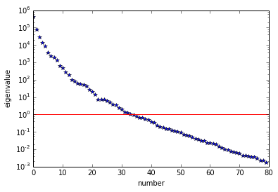
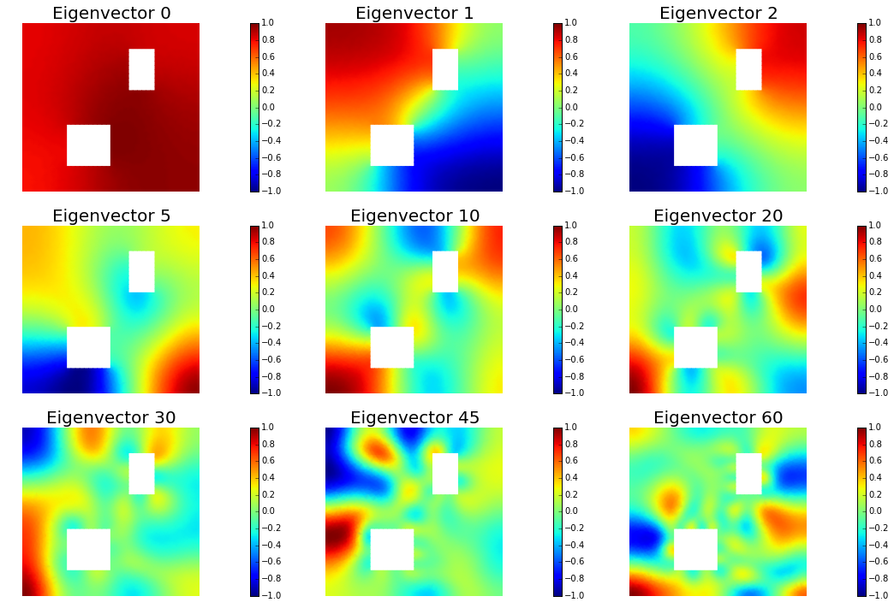
9. Compute the MAP point
H.misfit_only = False
solver = CGSolverSteihaug()
solver.set_operator(H)
solver.set_preconditioner( posterior.Hlr )
solver.parameters["print_level"] = 1
solver.parameters["rel_tolerance"] = 1e-6
solver.solve(a, -mg)
problem.solveFwd(u, [u,a,p], 1e-12)
total_cost, reg_cost, misfit_cost = problem.cost([u,a,p])
print "Total cost {0:5g}; Reg Cost {1:5g}; Misfit {2:5g}".format(total_cost, reg_cost, misfit_cost)
posterior.mean = a
plt.figure(figsize=(7.5,5))
nb.plot(dl.Function(Vh, a), mytitle="Initial Condition")
plt.show()
nb.show_solution(Vh, a, u, "Solution")
Iterartion : 0 (B r, r) = 30439.3327254
Iteration : 1 (B r, r) = 0.0608908617948
Iteration : 2 (B r, r) = 1.04124879143e-05
Iteration : 3 (B r, r) = 9.49494299284e-09
Relative/Absolute residual less than tol
Converged in 3 iterations with final norm 9.74419980955e-05
Total cost 84.6353; Reg Cost 69.0841; Misfit 15.5513
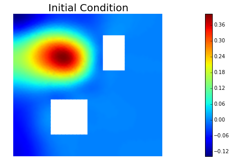
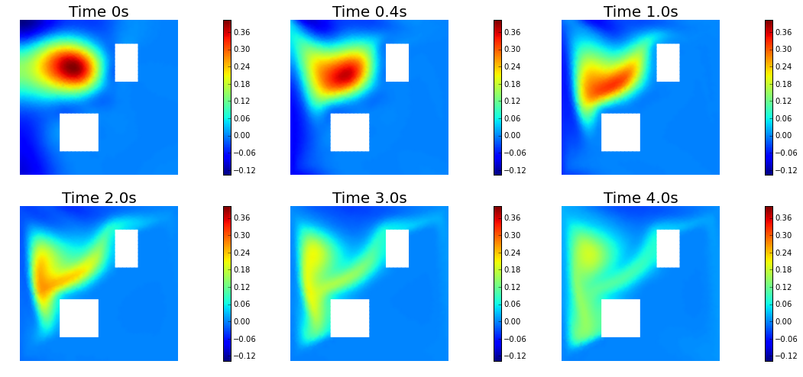
10. Prior and posterior pointwise variance fields
compute_trace = True
if compute_trace:
post_tr, prior_tr, corr_tr = posterior.trace(method="Estimator", tol=5e-2, min_iter=20, max_iter=2000)
print "Posterior trace {0:5g}; Prior trace {1:5g}; Correction trace {2:5g}".format(post_tr, prior_tr, corr_tr)
post_pw_variance, pr_pw_variance, corr_pw_variance = posterior.pointwise_variance()
objs = [dl.Function(Vh, pr_pw_variance),
dl.Function(Vh, post_pw_variance)]
mytitles = ["Prior Variance", "Posterior Variance"]
nb.multi1_plot(objs, mytitles, logscale=True)
plt.show()
Posterior trace 0.000563201; Prior trace 0.0285287; Correction trace 0.0279655
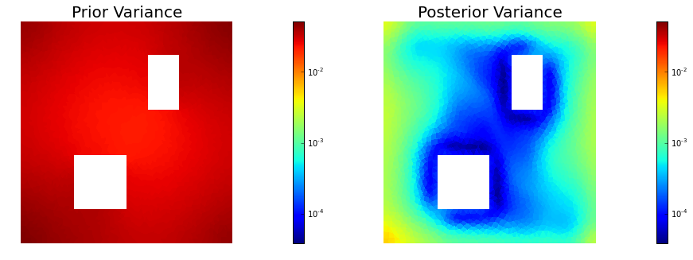
11. Draw samples from the prior and posterior distributions
nsamples = 5
noise = dl.Vector()
posterior.init_vector(noise,"noise")
noise_size = noise.array().shape[0]
s_prior = dl.Function(Vh, name="sample_prior")
s_post = dl.Function(Vh, name="sample_post")
pr_max = 2.5*math.sqrt( pr_pw_variance.max() ) + prior.mean.max()
pr_min = -2.5*math.sqrt( pr_pw_variance.min() ) + prior.mean.min()
ps_max = 2.5*math.sqrt( post_pw_variance.max() ) + posterior.mean.max()
ps_min = -2.5*math.sqrt( post_pw_variance.max() ) + posterior.mean.min()
for i in range(nsamples):
noise.set_local( np.random.randn( noise_size ) )
posterior.sample(noise, s_prior.vector(), s_post.vector())
plt.figure(figsize=(15,5))
nb.plot(s_prior, subplot_loc=121,mytitle="Prior sample", vmin=pr_min, vmax=pr_max)
nb.plot(s_post, subplot_loc=122,mytitle="Posterior sample", vmin=ps_min, vmax=ps_max)
plt.show()
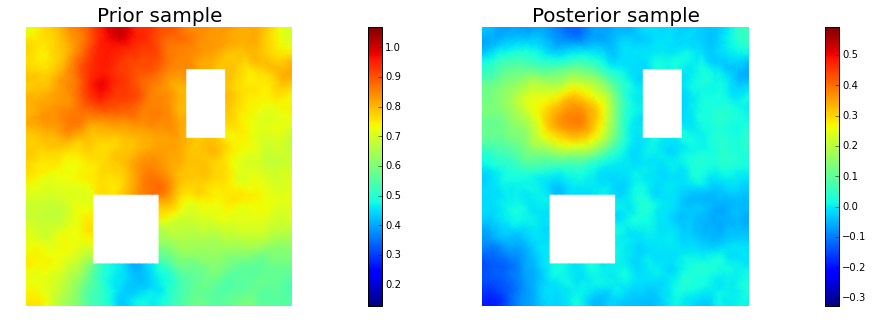
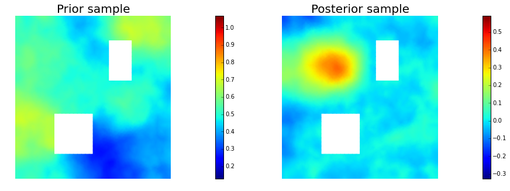
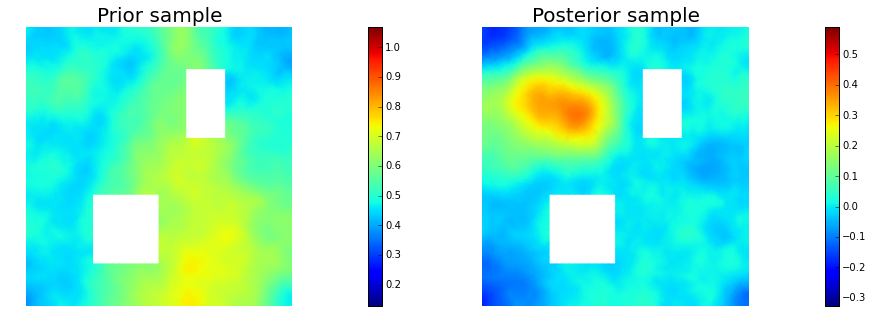

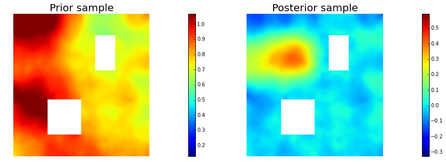
Copyright (c) 2016, The University of Texas at Austin & University of California, Merced. All Rights reserved. See file COPYRIGHT for details.
This file is part of the hIPPYlib library. For more information and source code availability see https://hippylib.github.io.
hIPPYlib is free software; you can redistribute it and/or modify it under the terms of the GNU General Public License (as published by the Free Software Foundation) version 3.0 dated June 2007.